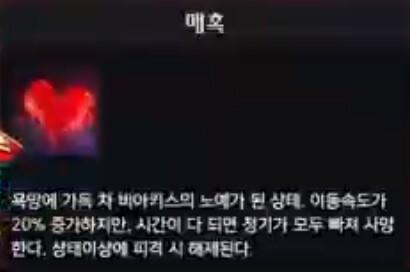

비아키스 공략의 시작과 끝이라고 할 수 있는 매혹 게이지 입니다.
플레이어들이 가장 먼저 신경 써야할 기믹이라고
할 수 있으며 70%가 넘어갈 시
가장 처음 마주치는 관문인 칼처리 기믹과 마지막에 귀찮게 만드는 고래를 파훼할 수 있는 버프를 획득합니다.
게이지의 증가는 비아키스가 사용하는 각종 패턴에 피격 당하거나 특수한 상황에서
증가됩니다.

매혹 게이지가 70%이상 올라갈 시 공격력과 받피증이 올라가는 진홍빛 갈증 버프와 맵에 보이지 않는 것들을 볼 수 있게 해주는 욕망의 환상 버프를 동시에 획득하게 됩니다. 매혹 게이지가 70% 내려갈 시 사라집니다. 또한 매혹 게이지가 100%가 되면

이처럼 타격 가능한 상태가 되고 다른 팀원들을 공격합니다. 매혹에 걸린 대상 끼리는 같은 공대원으로 취급되어 서로 공격하지 않습니다.
매혹 게이지를 내리는 방법은 총 3가지가 있습니다. 맵의 12시 3시 9시에 있는 빛의 구체를 사용하면 일정 범위 내에 있는 모든 파티원의 매혹 게이지를 빠른속도로 감소시킵니다.

에스더 스킬인 이난나 스킬을 사용하면 일정 범위 안의 플레이어들의 매혹 게이지를 서서히 감소시켜줍니다.
매혹 게이지를 100%로 만든 상태에서 매혹에 걸린 후 상태이상 공격을 맞을 시 50%정도 감소됩니다